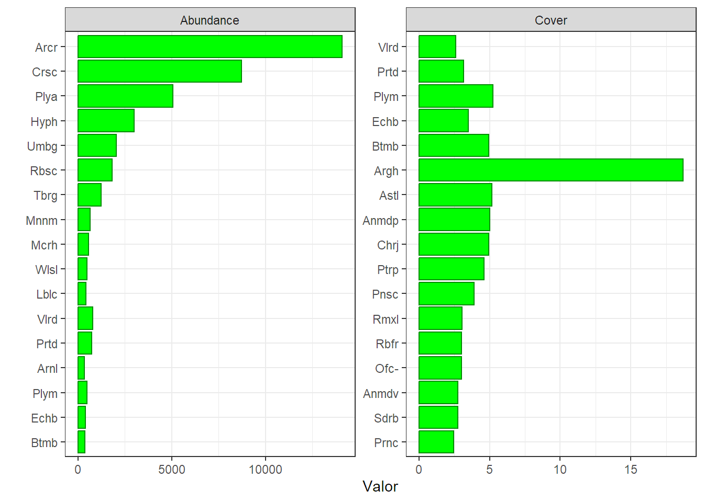
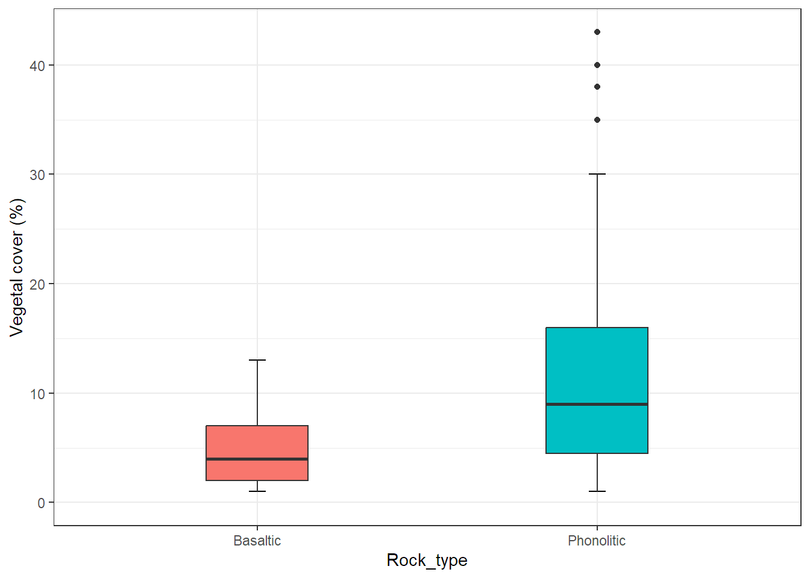
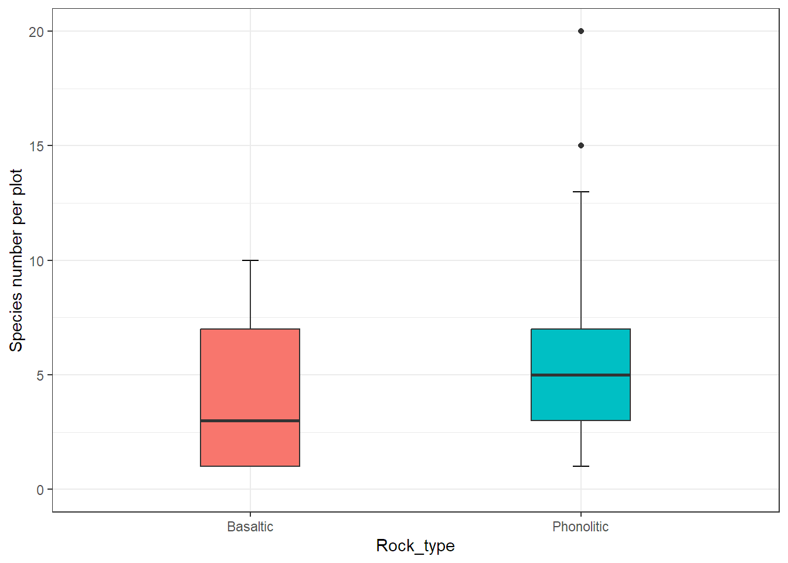
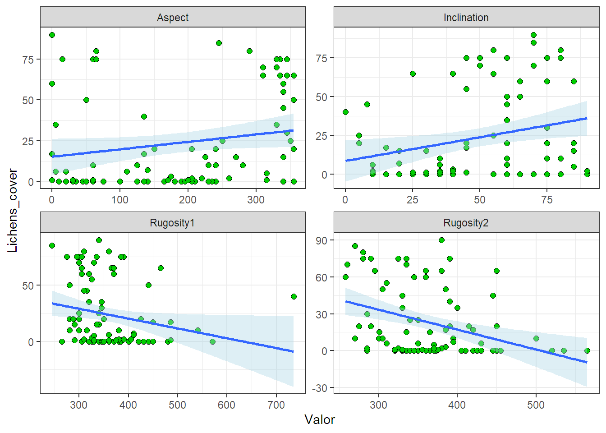
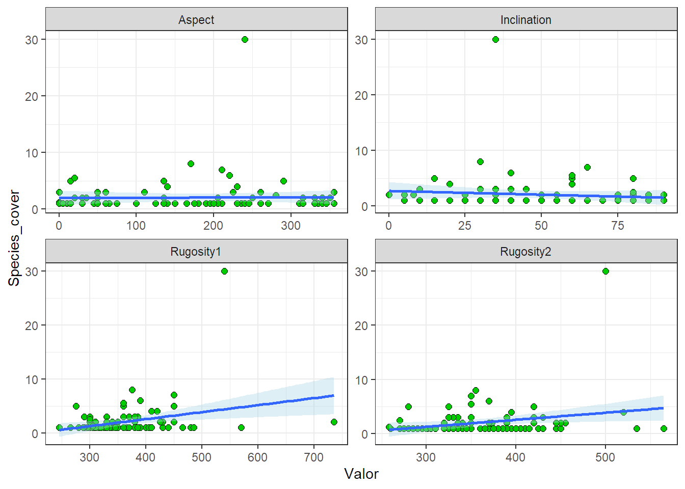

library(tidyverse)
library(ggplot2)
library(readxl)Tidy Vegetation La Palma
Taller práctico en casa 1
Pautas Taller 1.
Construya un documento tipo .qmd que incluya tanto línea de código como salidas que muestre:
1. Cargue de librerías requeridas.
2. Importación de los datos emplear.
3. Total por Rank Taxa.
Una tabla con el número total de especies, familias y géneros registrados en el área de muestreo; es decir que se evidencie, ¿Cuántos registros hay de cada nivel taxonómico?
| Species | Family | Genus |
|---|---|---|
| 69 | 24 | 62 |
4. Sp por status y sitio.
Una tabla de frecuencias con la cantidad de especies registradas resumida por las variables status (Fila) y Site (Columnas).
| Status | Escapada del volcán Teneguía | Fuente de los Roques | Los canarios | Roque Teneguía |
|---|---|---|---|---|
| Endemic to La Palma Islands | 5 | 6 | 4 | 4 |
| Endemic to the Canary Islands | 8 | 7 | 7 | 5 |
| Introduced | 6 | 4 | 2 | 0 |
| Native | 28 | 16 | 7 | 5 |
5. Tabla codificación de especies.
Una tabla con el nombre de cada una de las especies registradas (columna 1) y su abreviatura (columna 2).
| Species | CodSp |
|---|---|
| Paronychia canariensis | Prnc |
| Polypodium macaronesicum | Plym |
| Bituminaria bituminosa | Btmb |
| Monanthes muralis | Mnnm |
| Umbilicus gaditanus | Umbg |
| Echium brevirame | Echb |
| Aira caryophyllea | Arcr |
| Pterocephalus porphyranthus | Ptrp |
| Medicago truncatula | Mdct |
| Pinus canariensis | Pnsc |
| Geranium purpureum | Grnp |
| Geranium molle | Grnm |
| Aeonium arboreum ssp. Holochrysum | AasH |
| Sonchus oleraceus | Snco |
| Holcus lanatus | Hlcl |
| Davallia canariensis | Dvlc |
| Sideritis barbellata | Sdrb |
| Hemionitis gluckuk | Hmntsgl |
| Lobularia canariensis | Lblc |
| Aichryson bollei | Achb |
| Cosentinia vellea ssp. bivalens | Cvsb |
| Bystropogon origanifolius ssp. palmensis | Bosp |
| Allium canariense | Allc |
| Tolpis lacinata | Tlpl |
| Stachys arvensis | Stca |
| Valerianella dentata | Vlrd |
| Polycarpea tenuis | Plyt |
| Galium aparine | Glma |
| Vicia sp. | Vsp. |
| Parietaria debilis | Prtd |
| Solanum villosum | Slnv |
| Arabidopsis thaliana | Arbt |
| Arenaria leptoclados | Arnl |
| Sonchus hierrensis | Snch |
| Anthoxanthum odoratum | Anto |
| Wahlenbergia lobelioides ssp. lobelioides | Wlsl |
| Polycarpea aristata | Plya |
| Hemionitis guanchica | Hmntsgn |
| Filago germanica | Flgg |
| Tuberaria guttata | Tbrg |
| Festuca muralis | Fstm |
| Crassula campestris | Crsc |
| Brassica oleracea | Brso |
| Hyparrhenia hirta | Hyph |
| Cardamine hirsuta | Crdh |
| Rumex bucephalophorus ssp. canariensis | Rbsc |
| Anogramma leptophylla | Angl |
| Micromeria herpyllomorpha | Mcrh |
| Rubia fruticosa | Rbfr |
| Cheirolophus junonianus | Chrj |
| Phagnalon purpurascens | Phgp |
| Aeonium davidbramwellii | Anmdv |
| Kleinia neriifolia | Klnn |
| Rumex lunaria | Rmxl |
| Argyranthemum haouarytheum | Argh |
| Erodium botrys | Erdb |
| Opuntia ficus-indica | Ofc- |
| Periploca laevigata | Prpl |
| Todaroa aurea | Tdra |
| Pteridum aquilinum | Ptra |
| Schizogyne sericea | Schs |
| Mercurialis canariensis | Mrcc |
| Ononis serrata | Onns |
| Erica arborea | Erca |
| Erigeron bonariensis | Ergb |
| Trifolium arvense | Trfa |
| Aeonium diplocyclum | Anmdp |
| Astydamia latifolia | Astl |
| Lavandula canariensis | Lvnc |
6. Tabla Abundancia
Una tabla con 4 columnas: la primera con el nombre de cada una de las especies registradas (abreviatura), la segunda con el número total de individuos observados, la tercera con la cobertura vegetal promedio, y la cuarta con la abundancia relativa en %.
| CodSp | Abundance | Cover | percentage |
|---|---|---|---|
| AasH | 15 | 1.555556 | 0.0343 |
| Achb | 46 | 1.000000 | 0.1052 |
| Allc | 74 | 1.000000 | 0.1693 |
| Angl | 3 | 1.000000 | 0.0069 |
| Anmdp | 276 | 5.000000 | 0.6313 |
| Anmdv | 34 | 2.764706 | 0.0778 |
| Anto | 45 | 1.000000 | 0.1029 |
| Arbt | 2 | 1.000000 | 0.0046 |
| Arcr | 14085 | 1.675418 | 32.2193 |
| Argh | 260 | 18.692308 | 0.5947 |
| Arnl | 353 | 1.000000 | 0.8075 |
| Astl | 32 | 5.176471 | 0.0732 |
| Bosp | 6 | 1.000000 | 0.0137 |
| Brso | 1 | 1.000000 | 0.0023 |
| Btmb | 373 | 4.930233 | 0.8532 |
| Chrj | 108 | 4.945946 | 0.2470 |
| Crdh | 164 | 1.090909 | 0.3751 |
| Crsc | 8735 | 1.000000 | 19.9812 |
| Cvsb | 168 | 1.000000 | 0.3843 |
| Dvlc | 51 | 1.533333 | 0.1167 |
| Echb | 407 | 3.505882 | 0.9310 |
| Erca | 3 | 2.000000 | 0.0069 |
| Erdb | 300 | 1.000000 | 0.6862 |
| Ergb | 1 | 1.000000 | 0.0023 |
| Flgg | 6 | 1.000000 | 0.0137 |
| Fstm | 45 | 1.000000 | 0.1029 |
| Glma | 37 | 1.000000 | 0.0846 |
| Grnm | 92 | 1.928571 | 0.2104 |
| Grnp | 72 | 1.000000 | 0.1647 |
| Hlcl | 8 | 1.600000 | 0.0183 |
| Hmntsgl | 101 | 1.100000 | 0.2310 |
| Hmntsgn | 142 | 1.000000 | 0.3248 |
| Hyph | 2997 | 1.321101 | 6.8556 |
| Klnn | 25 | 1.333333 | 0.0572 |
| Lblc | 426 | 1.770833 | 0.9745 |
| Lvnc | 3 | 1.333333 | 0.0069 |
| Mcrh | 558 | 2.137097 | 1.2764 |
| Mdct | 5 | 1.000000 | 0.0114 |
| Mnnm | 643 | 1.436782 | 1.4709 |
| Mrcc | 3 | 1.000000 | 0.0069 |
| Ofc- | 1 | 3.000000 | 0.0023 |
| Onns | 4 | 1.166667 | 0.0091 |
| Phgp | 26 | 1.000000 | 0.0595 |
| Plya | 5077 | 1.046083 | 11.6136 |
| Plym | 493 | 5.246154 | 1.1277 |
| Plyt | 3 | 1.000000 | 0.0069 |
| Pnsc | 10 | 3.888889 | 0.0229 |
| Prnc | 36 | 2.466667 | 0.0823 |
| Prpl | 4 | 1.000000 | 0.0091 |
| Prtd | 747 | 3.160000 | 1.7088 |
| Ptra | 4 | 2.333333 | 0.0091 |
| Ptrp | 14 | 4.625000 | 0.0320 |
| Rbfr | 39 | 3.000000 | 0.0892 |
| Rbsc | 1830 | 2.000000 | 4.1861 |
| Rmxl | 36 | 3.047619 | 0.0823 |
| Schs | 2 | 1.000000 | 0.0046 |
| Sdrb | 12 | 2.750000 | 0.0274 |
| Slnv | 7 | 1.000000 | 0.0160 |
| Snch | 3 | 2.000000 | 0.0069 |
| Snco | 2 | 1.000000 | 0.0046 |
| Stca | 6 | 1.000000 | 0.0137 |
| Tbrg | 1232 | 1.000000 | 2.8182 |
| Tdra | 2 | 1.000000 | 0.0046 |
| Tlpl | 10 | 1.250000 | 0.0229 |
| Trfa | 105 | 1.000000 | 0.2402 |
| Umbg | 2049 | 2.261084 | 4.6871 |
| Vlrd | 778 | 2.617021 | 1.7797 |
| Vsp. | 3 | 1.000000 | 0.0069 |
| Wlsl | 476 | 1.000000 | 1.0888 |
7. Gráfico de las especies más abundantes y con más coberturas.
Con la información de la tabla anterior la creación de un gráfico con dos paneles donde se visualice la abundancia total (panel izquierdo) y la cobertura vegetal promedio (panel derecho) de las especies (abreviadas) cuyos valores en cada variable estén por encima del cuartil 3. Maneje eje libres.

8. Matriz biologica de coberturas vegetal por parcela.
La creación de una base de datos bajo el nombre de <
tibble [95 × 72] (S3: tbl_df/tbl/data.frame)
$ Site : chr [1:95] "Escapada del volcán Teneguía" "Escapada del volcán Teneguía" "Escapada del volcán Teneguía" "Escapada del volcán Teneguía" ...
$ Plot : chr [1:95] "P1" "P10" "P11" "P12" ...
$ Rock_type : chr [1:95] "Phonolitic" "Phonolitic" "Phonolitic" "Phonolitic" ...
$ Bituminaria bituminosa : num [1:95] 1 4 0 7 2 0 0 0 0 0 ...
$ Monanthes muralis : num [1:95] 1 0 0 0 0 0 0 0 0 0 ...
$ Paronychia canariensis : num [1:95] 10 0 0 0 0 0 1 0 0 0 ...
$ Polypodium macaronesicum : num [1:95] 2 8 5 0 1 2 8 0 0 0 ...
$ Umbilicus gaditanus : num [1:95] 1 1 0 1 0 2 8 1 1 0 ...
$ Allium canariense : num [1:95] 0 1 1 0 1 0 1 0 0 0 ...
$ Echium brevirame : num [1:95] 0 1 0 0 0 0 1 0 0 1 ...
$ Galium aparine : num [1:95] 0 1 0 0 0 0 1 0 0 0 ...
$ Lobularia canariensis : num [1:95] 0 2 1 1 1 0 1 0 0 0 ...
$ Polycarpea tenuis : num [1:95] 0 1 0 0 0 0 0 0 0 0 ...
$ Sideritis barbellata : num [1:95] 0 1 0 0 0 8 1 0 0 0 ...
$ Stachys arvensis : num [1:95] 0 1 0 0 0 0 0 0 0 0 ...
$ Tolpis lacinata : num [1:95] 0 1 0 0 0 0 0 0 0 0 ...
$ Valerianella dentata : num [1:95] 0 1 1 0 0 0 3 0 0 0 ...
$ Aeonium arboreum ssp. Holochrysum : num [1:95] 0 0 1 0 0 0 0 0 0 0 ...
$ Bystropogon origanifolius ssp. palmensis : num [1:95] 0 0 1 0 0 0 0 0 0 0 ...
$ Cosentinia vellea ssp. bivalens : num [1:95] 0 0 1 0 0 0 0 1 1 1 ...
$ Davallia canariensis : num [1:95] 0 0 1 0 0 0 0 0 0 0 ...
$ Hemionitis gluckuk : num [1:95] 0 0 1 0 0 0 0 1 1 1 ...
$ Vicia sp. : num [1:95] 0 0 0 1 0 0 0 0 0 0 ...
$ Holcus lanatus : num [1:95] 0 0 0 0 1 1 0 0 0 0 ...
$ Parietaria debilis : num [1:95] 0 0 0 0 0 1 4 0 0 0 ...
$ Aichryson bollei : num [1:95] 0 0 0 0 0 0 1 0 0 0 ...
$ Aira caryophyllea : num [1:95] 0 0 0 0 0 0 1 0 1 1 ...
$ Anthoxanthum odoratum : num [1:95] 0 0 0 0 0 0 1 0 0 0 ...
$ Arabidopsis thaliana : num [1:95] 0 0 0 0 0 0 1 0 0 0 ...
$ Arenaria leptoclados : num [1:95] 0 0 0 0 0 0 1 0 0 0 ...
$ Geranium molle : num [1:95] 0 0 0 0 0 0 1 0 0 0 ...
$ Pterocephalus porphyranthus : num [1:95] 0 0 0 0 0 0 1 0 0 0 ...
$ Solanum villosum : num [1:95] 0 0 0 0 0 0 1 0 0 0 ...
$ Sonchus hierrensis : num [1:95] 0 0 0 0 0 0 2 0 0 0 ...
$ Wahlenbergia lobelioides ssp. lobelioides: num [1:95] 0 0 0 0 0 0 1 0 0 1 ...
$ Polycarpea aristata : num [1:95] 0 0 0 0 0 0 0 0 1 1 ...
$ Filago germanica : num [1:95] 0 0 0 0 0 0 0 0 0 1 ...
$ Hemionitis guanchica : num [1:95] 0 0 0 0 0 0 0 0 0 1 ...
$ Tuberaria guttata : num [1:95] 0 0 0 0 0 0 0 0 0 1 ...
$ Festuca muralis : num [1:95] 0 0 0 0 0 0 0 0 0 0 ...
$ Medicago truncatula : num [1:95] 0 0 0 0 0 0 0 0 0 0 ...
$ Pinus canariensis : num [1:95] 0 0 0 0 0 0 0 0 0 0 ...
$ Crassula campestris : num [1:95] 0 0 0 0 0 0 0 0 0 0 ...
$ Sonchus oleraceus : num [1:95] 0 0 0 0 0 0 0 0 0 0 ...
$ Brassica oleracea : num [1:95] 0 0 0 0 0 0 0 0 0 0 ...
$ Hyparrhenia hirta : num [1:95] 0 0 0 0 0 0 0 0 0 0 ...
$ Cardamine hirsuta : num [1:95] 0 0 0 0 0 0 0 0 0 0 ...
$ Anogramma leptophylla : num [1:95] 0 0 0 0 0 0 0 0 0 0 ...
$ Rumex bucephalophorus ssp. canariensis : num [1:95] 0 0 0 0 0 0 0 0 0 0 ...
$ Geranium purpureum : num [1:95] 0 0 0 0 0 0 0 0 0 0 ...
$ Micromeria herpyllomorpha : num [1:95] 0 0 0 0 0 0 0 0 0 0 ...
$ Rubia fruticosa : num [1:95] 0 0 0 0 0 0 0 0 0 0 ...
$ Aeonium davidbramwellii : num [1:95] 0 0 0 0 0 0 0 0 0 0 ...
$ Argyranthemum haouarytheum : num [1:95] 0 0 0 0 0 0 0 0 0 0 ...
$ Kleinia neriifolia : num [1:95] 0 0 0 0 0 0 0 0 0 0 ...
$ Opuntia ficus-indica : num [1:95] 0 0 0 0 0 0 0 0 0 0 ...
$ Periploca laevigata : num [1:95] 0 0 0 0 0 0 0 0 0 0 ...
$ Todaroa aurea : num [1:95] 0 0 0 0 0 0 0 0 0 0 ...
$ Cheirolophus junonianus : num [1:95] 0 0 0 0 0 0 0 0 0 0 ...
$ Pteridum aquilinum : num [1:95] 0 0 0 0 0 0 0 0 0 0 ...
$ Rumex lunaria : num [1:95] 0 0 0 0 0 0 0 0 0 0 ...
$ Phagnalon purpurascens : num [1:95] 0 0 0 0 0 0 0 0 0 0 ...
$ Schizogyne sericea : num [1:95] 0 0 0 0 0 0 0 0 0 0 ...
$ Erodium botrys : num [1:95] 0 0 0 0 0 0 0 0 0 0 ...
$ Erica arborea : num [1:95] 0 0 0 0 0 0 0 0 0 0 ...
$ Erigeron bonariensis : num [1:95] 0 0 0 0 0 0 0 0 0 0 ...
$ Trifolium arvense : num [1:95] 0 0 0 0 0 0 0 0 0 0 ...
$ Aeonium diplocyclum : num [1:95] 0 0 0 0 0 0 0 0 0 0 ...
$ Mercurialis canariensis : num [1:95] 0 0 0 0 0 0 0 0 0 0 ...
$ Ononis serrata : num [1:95] 0 0 0 0 0 0 0 0 0 0 ...
$ Astydamia latifolia : num [1:95] 0 0 0 0 0 0 0 0 0 0 ...
$ Lavandula canariensis : num [1:95] 0 0 0 0 0 0 0 0 0 0 ...9. Gráfico de cajas 1.
Con la base generada en el punto anterior la creación de un gráfico de cajas y bigotes donde se compare la distribución de la cobertura total registrada por parcela según la variable Rock_Type.

10. Gráfico de cajas 2.
La creación de un gráfico de cajas similar al del punto anterior pero donde se compare el número de especies distintas registradas en total por parcela según la variable Rock_Type.

11. Matriz ambiental por parcela.
La creación de una base de datos bajo el nombre de <
tibble [95 × 9] (S3: tbl_df/tbl/data.frame)
$ Site : chr [1:95] "Escapada del volcán Teneguía" "Escapada del volcán Teneguía" "Escapada del volcán Teneguía" "Escapada del volcán Teneguía" ...
$ Plot : chr [1:95] "P1" "P10" "P11" "P12" ...
$ Rock_type : chr [1:95] "Phonolitic" "Phonolitic" "Phonolitic" "Phonolitic" ...
$ Longitude : num [1:95] 222684 222670 222685 222674 222676 ...
$ Latitude : num [1:95] 3157622 3157602 3157596 3157589 3157590 ...
$ Aspect : num [1:95] 75 230 210 210 210 50 60 190 205 140 ...
$ Inclination: num [1:95] 80 60 55 65 80 80 35 25 25 10 ...
$ Rugosity1 : num [1:95] 400 420 440 450 360 380 370 305 320 265 ...
$ Rugosity2 : num [1:95] 410 520 565 350 285 350 420 360 365 335 ...12. Resumen.
Con la base de datos anterior la creación de una tabla de resumen estadístico que muestre para cada variable separada por la variable Rock_Type, la media, la media y el p-valor de la prueba de normalidad Shapiro -Wilks. (Cada variable en una columna distinta).
| Rock_type | Statistic | Aspect | Inclination | Latitude | Longitude | Rugosity1 | Rugosity2 |
|---|---|---|---|---|---|---|---|
| Basaltic | Media | 212.436 | 41.923 | 3157389 | 221050.4 | 354.675 | 359.615 |
| Basaltic | Mdn | 230.000 | 40.000 | 3157714 | 220404.5 | 345.000 | 350.000 |
| Basaltic | pvalue | 0.005 | 0.042 | 0 | 0.0 | 0.424 | 0.072 |
| Phonolitic | Media | 167.778 | 54.055 | 3105556 | 220762.9 | 369.273 | 364.855 |
| Phonolitic | Mdn | 190.000 | 60.000 | 3153831 | 220301.0 | 350.000 | 355.000 |
| Phonolitic | pvalue | 0.000 | 0.001 | 0 | 0.0 | 0.000 | 0.045 |
13. Data completas coberturas per plot y ambientales.
La creación de una base de datos bajo el nombre de <
tibble [95 × 13] (S3: tbl_df/tbl/data.frame)
$ Site.x : chr [1:95] "Escapada del volcán Teneguía" "Escapada del volcán Teneguía" "Escapada del volcán Teneguía" "Escapada del volcán Teneguía" ...
$ Plot : chr [1:95] "P1" "P10" "P11" "P12" ...
$ Rock_type.x : chr [1:95] "Phonolitic" "Phonolitic" "Phonolitic" "Phonolitic" ...
$ Longitude : num [1:95] 222684 222670 222685 222674 222676 ...
$ Latitude : num [1:95] 3157622 3157602 3157596 3157589 3157590 ...
$ Aspect : num [1:95] 75 230 210 210 210 50 60 190 205 140 ...
$ Inclination : num [1:95] 80 60 55 65 80 80 35 25 25 10 ...
$ Rugosity1 : num [1:95] 400 420 440 450 360 380 370 305 320 265 ...
$ Rugosity2 : num [1:95] 410 520 565 350 285 350 420 360 365 335 ...
$ Site.y : chr [1:95] "Escapada del volcán Teneguía" "Escapada del volcán Teneguía" "Escapada del volcán Teneguía" "Escapada del volcán Teneguía" ...
$ Rock_type.y : chr [1:95] "Phonolitic" "Phonolitic" "Phonolitic" "Phonolitic" ...
$ Lichens_cover: num [1:95] 0 0 0 0 0 0 0 0 0 0 ...
$ Species_cover: num [1:95] 1 4 1 7 1 2 3 1 1 1 ...14. Gráfico relación Cobertura de liquenes.
Con la base de datos <

